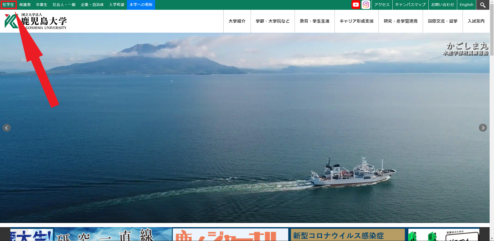
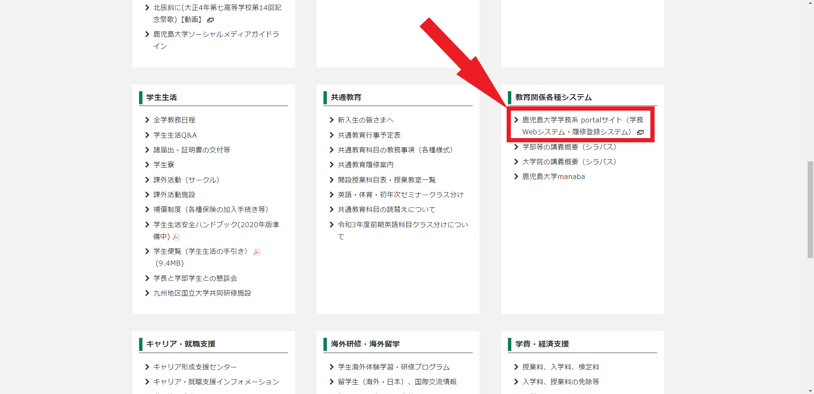
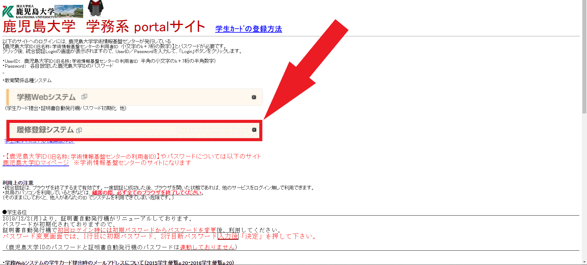
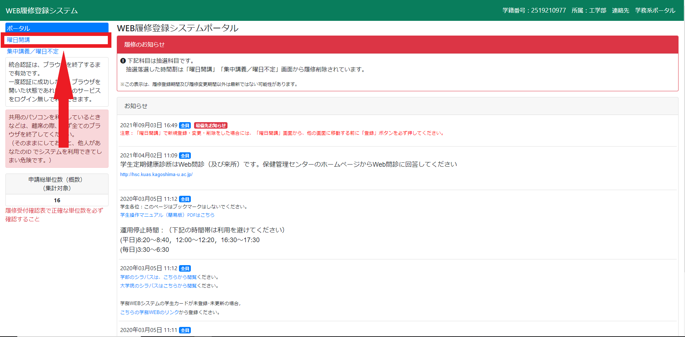

시간표 확인
3학년 2학기 시간표
|
월 |
화 |
수 |
목 |
금 |
| 1교시 |
원자력·방사선과 환경 |
|
기계공학 세미나 |
|
| 2교시 |
|
|
기계 영어1 |
|
기계제어공학 |
| 3교시 |
|
유체기계 |
|
|
응용기계설계 |
| 4교시 |
|
|
|
|
| 5교시 |
수치계산과 프로그램 |
과학 기술론 |
|
|
총 단위 수: |
16 |
이수등록 확인
이수등록 확인하기(pdf)
이수 등록 절차
- 가고시마 대학 홈페이지 접속
- 왼쪽 상단 재학생(在学生) 클릭

- 아래로 스크롤 후 교육 관계 각종 시스템 (教育関係各種システム) 항목의 가고시마 대학 학무 portal사이트 (鹿児島大学学務portaサイト) 클릭

- 이수 등록 시스템 (履修登録システム) 클릭

- 로그인
- 요일개강 (曜日開講) 클릭

- 이수 등록
진급·졸업 요건
내 성적 보기